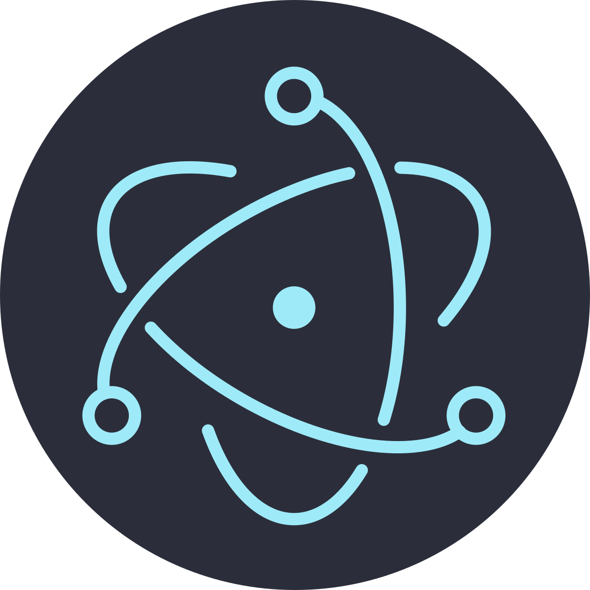
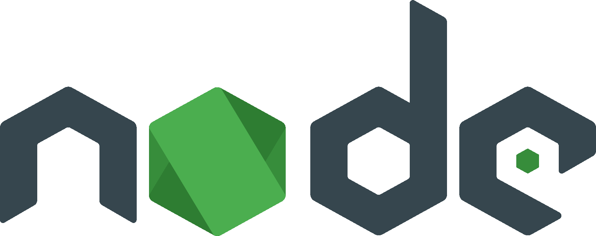

Wat is Electron?

Electron.js is een JavaScript framework waarmee je desktop-apps kan bouwen met webtechnologie.
Dat betekent dat je dezelfde technieken kan gebruiken als bij websites, maar dan om programma’s te maken voor Windows, macOS en Linux.
Je kan zelfs een bestaande website omvormen tot een desktop-app, door ze in Electron te laden. Zo werken bijvoorbeeld Discord en VS Code.
Hoe werkt Electron?
Electron is in feite Google Chrome zonder de normale browser-UI (dus zonder adresbalk, tabs enz.).
Het start enkel een venster waarin jouw webapp draait, alsof je Chrome start maar alle interface verbergt.
Waarom Electron?
Meest moderne UI-technologie:
Geen gedoe met obscure GUI-toolkits die zich gedragen alsof ze uit 1998 ontsnapt zijn. Je gebruikt de meest volwassen, flexibele en wereldwijd ondersteunde UI-technologie die we hebben: HTML en CSS.
Animaties, responsief ontwerp, toegankelijkheid, …
Cross-platform:
Je bouwt dingen die op Web, Windows, MacOS en Linux draaien zonder drie keer te beginnen.
JavaScript everywhere:
Traditioneel heb je 3 soorten developers in een bedrijf:
- Aan de ene kant heb je de app-developers die desktop- of mobiele interfaces bouwen.
- Aan de andere kant de backend-engineers die servers onderhouden en APIs schrijven.
- Verderop de web-ontwikkelaars die voor de browser ontwerpen.
Dit maakt teams minder flexibel. Wanneer iemand ziek is, wanneer een project verschuift, wanneer je snel moet schakelen, bots je op muren.
Als je front-end, backend én desktop-apps in dezelfde taal kunt schrijven, verdwijnt die muur.
Niet omdat iedereen ineens alles kan, expertise blijft nodig, maar omdat iedereen kan meebewegen.
Iedereen spreekt dezelfde basistaal. Begrijpt dezelfde datastructuren.
Je krijgt teams waar:
- Een front-end ontwikkelaar even een kleine server-bug kan fixen.
- Een backend-dev die iets in de UI kan aanpassen.
Dependenties
NodeJS

Node.js is JavaScript buiten de browser, op je computer. Hiermee kan JS bestanden lezen, servers draaien en praten met je OS.
NPM (Node Package Manager)
Npm is de pakketbeheerder die je een universum aan herbruikbare tools en libraries geeft, zodat je niet alles zelf hoeft te schrijven.
Denk LEGO-dozen, maar oneindig veel, en je mag ze combineren hoe je wilt.
- Geeft je toegang tot honderdduizenden kant-en-klare modules.
- Het beheert je dependencies.
Opdracht: Electron App
- Volg de Electrons Basics Tutorial tot en met Electron - Hello World.
- Creeër een eigen app van een eigen website.
- Hervat de tutorial van Electron - System Dialogs tot en met Electron - Webview, en implementeer de technieken in je app.
- Bekijken Electron - Defining Shortcuts en geef je app shortcuts.
- Bekijk de onderdelen Electron - Debugging en Electron - Packaging Apps en package je app.
Created: 05/11/2025